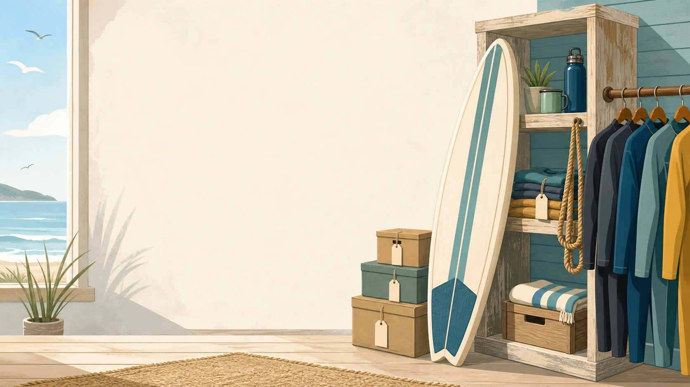

Retail · Inventory planning
Tidal Goods Co.
How much stock should a coastal shop buy for an eight-week selling period?
- Measure
- Cash committed, gross profit, and gross margin.
- Downside
- Demand falls to 80% of the base forecast.
- Limit
- Stay within the $27,000 inventory budget.